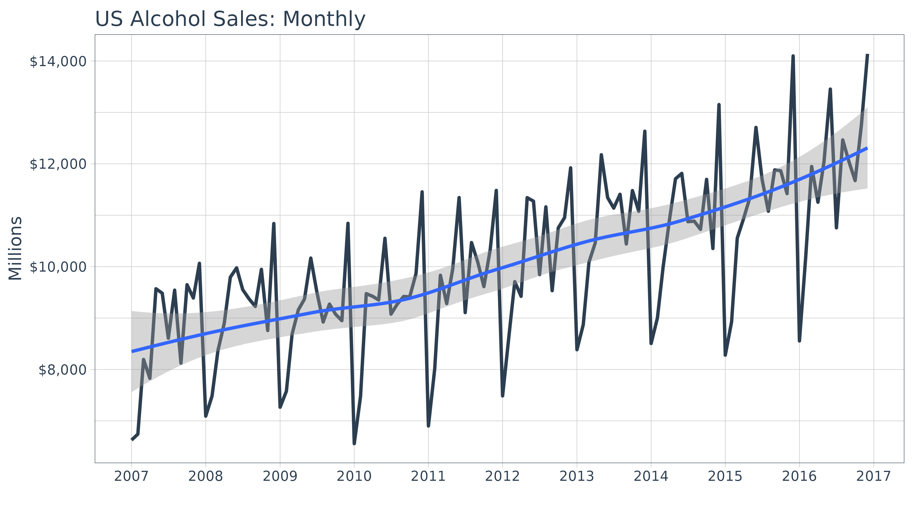
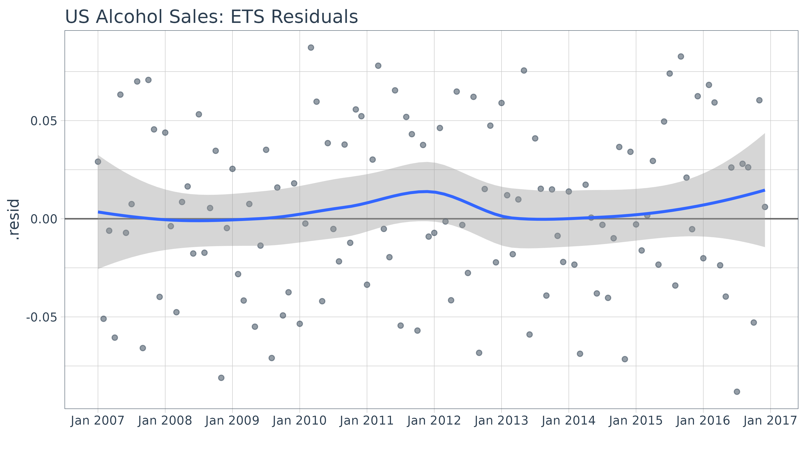
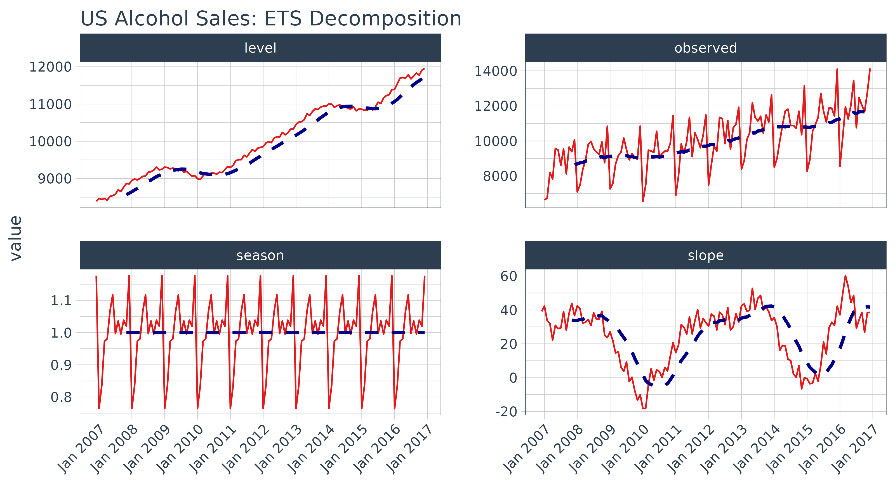
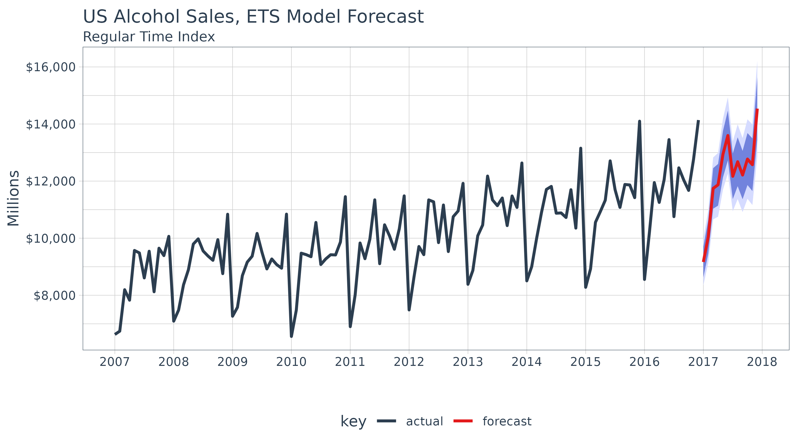

Introduction to sweep
Matt Dancho
2024-01-04
Source:vignettes/SW00_Introduction_to_sweep.Rmd
SW00_Introduction_to_sweep.RmdExtending
broomto time series forecasting
The sweep package extends the broom tools
(tidy, glance, and augment) for performing forecasts and time series
analysis in the “tidyverse”. The package is geared towards the workflow
required to perform forecasts using Rob Hyndman’s forecast
package, and contains the following elements:
model tidiers:
sw_tidy,sw_glance,sw_augment,sw_tidy_decompfunctions extendtidy,glance, andaugmentfrom thebroompackage specifically for models (ets(),Arima(),bats(), etc) used for forecasting.forecast tidier:
sw_sweepconverts aforecastobject to a tibble that can be easily manipulated in the “tidyverse”.
To illustrate, let’s take a basic forecasting workflow starting from data collected in a tibble format and then performing a forecast to achieve the end result in tibble format.
Forecasting Sales of Beer, Wine, and Distilled Alcohol Beverages
We’ll use the tidyquant package to get the US alcohol
sales, which comes from the FRED data base (the origin is the US Bureau
of the Census, one of the 80+ data sources FRED connects to). The FRED
code is “S4248SM144NCEN” and the data set can be found here.
alcohol_sales_tbl <- tq_get("S4248SM144NCEN",
get = "economic.data",
from = "2007-01-01",
to = "2016-12-31")
alcohol_sales_tbl## # A tibble: 120 × 3
## symbol date price
## <chr> <date> <int>
## 1 S4248SM144NCEN 2007-01-01 6627
## 2 S4248SM144NCEN 2007-02-01 6743
## 3 S4248SM144NCEN 2007-03-01 8195
## 4 S4248SM144NCEN 2007-04-01 7828
## 5 S4248SM144NCEN 2007-05-01 9570
## 6 S4248SM144NCEN 2007-06-01 9484
## 7 S4248SM144NCEN 2007-07-01 8608
## 8 S4248SM144NCEN 2007-08-01 9543
## 9 S4248SM144NCEN 2007-09-01 8123
## 10 S4248SM144NCEN 2007-10-01 9649
## # ℹ 110 more rowsWe can quickly visualize using the ggplot2 package. We
can see that there appears to be some seasonality and an upward
trend.
alcohol_sales_tbl %>%
ggplot(aes(x = date, y = price)) +
geom_line(linewidth = 1, color = palette_light()[[1]]) +
geom_smooth(method = "loess") +
labs(title = "US Alcohol Sales: Monthly", x = "", y = "Millions") +
scale_y_continuous(labels = scales::dollar) +
scale_x_date(date_breaks = "1 year", date_labels = "%Y") +
theme_tq()## `geom_smooth()` using formula = 'y ~ x'
Forecasting Workflow
The forecasting workflow involves a few basic steps:
- Step 1: Coerce to a
tsobject class. - Step 2: Apply a model (or set of models)
- Step 3: Forecast the models (similar to predict)
- Step 4: Use
sw_sweep()to tidy the forecast.
Note that we purposely omit other steps such as testing the
series for stationarity (Box.test(type = "Ljung")) and
analysis of autocorrelations (Acf, Pacf) for
brevity purposes. We recommend the analyst to follow the forecasting
workflow in “Forecasting: principles
and practice”
Step 1: Coerce to a ts object class
The forecast package uses the ts data
structure, which is quite a bit different than tibbles that we are
currently using. Fortunately, it’s easy to get to the correct structure
with tk_ts() from the timetk package. The
start and freq variables are required for the
regularized time series (ts) class, and these specify how
to treat the time series. For monthly, the frequency should be specified
as 12. This results in a nice calendar view. The
silent = TRUE tells the tk_ts() function to
skip the warning notifying us that the “date” column is being dropped.
Non-numeric columns must be dropped for ts class, which is
matrix based and a homogeneous data class.
alcohol_sales_ts <- tk_ts(alcohol_sales_tbl, start = 2007, freq = 12, silent = TRUE)
alcohol_sales_ts## Jan Feb Mar Apr May Jun Jul Aug Sep Oct Nov Dec
## 2007 6627 6743 8195 7828 9570 9484 8608 9543 8123 9649 9390 10065
## 2008 7093 7483 8365 8895 9794 9977 9553 9375 9225 9948 8758 10839
## 2009 7266 7578 8688 9162 9369 10167 9507 8923 9272 9075 8949 10843
## 2010 6558 7481 9475 9424 9351 10552 9077 9273 9420 9413 9866 11455
## 2011 6901 8014 9832 9281 9967 11344 9106 10469 10085 9612 10328 11483
## 2012 7486 8641 9709 9423 11342 11274 9845 11163 9532 10754 10953 11922
## 2013 8383 8870 10085 10462 12177 11342 11139 11409 10442 11479 11077 12636
## 2014 8506 9003 9991 10903 11709 11815 10875 10884 10725 11697 10353 13153
## 2015 8279 8926 10557 10933 11330 12708 11700 11079 11882 11865 11420 14100
## 2016 8556 10199 11949 11253 12046 13453 10755 12465 12038 11674 12761 14137A significant benefit is that the resulting ts object
maintains a “timetk index”, which will help with forecasting dates
later. We can verify this using has_timetk_idx() from the
timetk package.
has_timetk_idx(alcohol_sales_ts)## [1] TRUENow that a time series has been coerced, let’s proceed with modeling.
Step 2: Modeling a time series
The modeling workflow takes a time series object and applies a model.
Nothing new here: we’ll simply use the ets() function from
the forecast package to get an Exponential Smoothing ETS
(Error, Trend, Seasonal) model.
Where sweep can help is in the evaluation of a model.
Expanding on the broom package there are four
functions:
-
sw_tidy(): Returns a tibble of model parameters -
sw_glance(): Returns the model accuracy measurements -
sw_augment(): Returns the fitted and residuals of the model -
sw_tidy_decomp(): Returns a tidy decomposition from a model
The guide below shows which model object compatibility with
sweep tidier functions.
| Object | sw_tidy() | sw_glance() | sw_augment() | sw_tidy_decomp() | sw_sweep() |
|---|---|---|---|---|---|
| ar | |||||
| arima | X | X | X | ||
| Arima | X | X | X | ||
| ets | X | X | X | X | |
| baggedETS | |||||
| bats | X | X | X | X | |
| tbats | X | X | X | X | |
| nnetar | X | X | X | ||
| stl | X | ||||
| HoltWinters | X | X | X | X | |
| StructTS | X | X | X | X | |
| tslm | X | X | X | ||
| decompose | X | ||||
| adf.test | X | X | |||
| Box.test | X | X | |||
| kpss.test | X | X | |||
| forecast | X |
Going through the tidiers, we can get useful model
information.
sw_tidy
sw_tidy() returns the model parameters.
sw_tidy(fit_ets)## # A tibble: 17 × 2
## term estimate
## <chr> <dbl>
## 1 alpha 0.159
## 2 beta 0.0180
## 3 gamma 0.000107
## 4 phi 0.970
## 5 l 8389.
## 6 b 38.9
## 7 s0 1.17
## 8 s1 1.02
## 9 s2 1.04
## 10 s3 0.995
## 11 s4 1.04
## 12 s5 0.993
## 13 s6 1.12
## 14 s7 1.07
## 15 s8 0.982
## 16 s9 0.975
## 17 s10 0.837sw_glance
sw_glance() returns the model quality parameters.
sw_glance(fit_ets)## # A tibble: 1 × 12
## model.desc sigma logLik AIC BIC ME RMSE MAE MPE MAPE MASE
## <chr> <dbl> <dbl> <dbl> <dbl> <dbl> <dbl> <dbl> <dbl> <dbl> <dbl>
## 1 ETS(M,Ad,M) 0.0458 -1012. 2060. 2111. 40.7 431. 357. 0.223 3.54 0.705
## # ℹ 1 more variable: ACF1 <dbl>sw_augment
sw_augment() returns the actual, fitted and residual
values.
augment_fit_ets <- sw_augment(fit_ets)
augment_fit_ets## # A tibble: 120 × 4
## index .actual .fitted .resid
## <yearmon> <dbl> <dbl> <dbl>
## 1 Jan 2007 6627 6446. 0.0280
## 2 Feb 2007 6743 7122. -0.0532
## 3 Mar 2007 8195 8255. -0.00730
## 4 Apr 2007 7828 8330. -0.0603
## 5 May 2007 9570 8986. 0.0650
## 6 Jun 2007 9484 9541. -0.00597
## 7 Jul 2007 8608 8500. 0.0127
## 8 Aug 2007 9543 8932. 0.0684
## 9 Sep 2007 8123 8694. -0.0657
## 10 Oct 2007 9649 8977. 0.0749
## # ℹ 110 more rowsWe can review the residuals to determine if their are any underlying
patterns left. Note that the index is class yearmon, which
is a regularized date format.
augment_fit_ets %>%
ggplot(aes(x = index, y = .resid)) +
geom_hline(yintercept = 0, color = "grey40") +
geom_point(color = palette_light()[[1]], alpha = 0.5) +
geom_smooth(method = "loess") +
scale_x_yearmon(n = 10) +
labs(title = "US Alcohol Sales: ETS Residuals", x = "") +
theme_tq()## `geom_smooth()` using formula = 'y ~ x'
sw_tidy_decomp
sw_tidy_decomp() returns the decomposition of the ETS
model.
decomp_fit_ets <- sw_tidy_decomp(fit_ets)
decomp_fit_ets ## # A tibble: 121 × 5
## index observed level slope season
## <yearmon> <dbl> <dbl> <dbl> <dbl>
## 1 Dec 2006 NA 8389. 38.9 1.17
## 2 Jan 2007 6627 8464. 42.0 0.765
## 3 Feb 2007 6743 8433. 32.6 0.837
## 4 Mar 2007 8195 8455. 30.5 0.975
## 5 Apr 2007 7828 8404. 20.4 0.982
## 6 May 2007 9570 8510. 29.6 1.07
## 7 Jun 2007 9484 8531. 27.8 1.12
## 8 Jul 2007 8608 8575. 29.0 0.993
## 9 Aug 2007 9543 8697. 38.7 1.04
## 10 Sep 2007 8123 8643. 27.2 0.995
## # ℹ 111 more rowsWe can review the decomposition using ggplot2 as well.
The data will need to be manipulated slightly for the facet
visualization. The gather() function from the
tidyr package is used to reshape the data into a long
format data frame with column names “key” and “value” indicating all
columns except for index are to be reshaped. The “key” column is then
mutated using mutate() to a factor which preserves the
order of the keys so “observed” comes first when plotting.
decomp_fit_ets %>%
tidyr::gather(key = key, value = value, -index) %>%
dplyr::mutate(key = as.factor(key)) %>%
ggplot(aes(x = index, y = value, group = key)) +
geom_line(color = palette_light()[[2]]) +
geom_ma(ma_fun = SMA, n = 12, size = 1) +
facet_wrap(~ key, scales = "free_y") +
scale_x_yearmon(n = 10) +
labs(title = "US Alcohol Sales: ETS Decomposition", x = "") +
theme_tq() +
theme(axis.text.x = element_text(angle = 45, hjust = 1))## Warning: Using the `size` aesthetic in this geom was deprecated in ggplot2 3.4.0.
## ℹ Please use `linewidth` in the `default_aes` field and elsewhere instead.
## This warning is displayed once every 8 hours.
## Call `lifecycle::last_lifecycle_warnings()` to see where this warning was
## generated.## Warning: Removed 1 row containing missing values (`geom_line()`).
Under normal circumstances it would make sense to refine the model at this point. However, in the interest of showing capabilities (rather than how to forecast) we move onto forecasting the model. For more information on how to forecast, please refer to the online book “Forecasting: principles and practices”.
Step 3: Forecasting the model
Next we forecast the ETS model using the forecast()
function. The returned forecast object isn’t in a “tidy”
format (i.e. data frame). This is where the sw_sweep()
function helps.
Step 4: Tidy the forecast object
We’ll use the sw_sweep() function to coerce a
forecast into a “tidy” data frame. The
sw_sweep() function then coerces the forecast
object into a tibble that can be sent to ggplot for
visualization. Let’s inspect the result.
sw_sweep(fcast_ets, fitted = TRUE)## # A tibble: 252 × 7
## index key price lo.80 lo.95 hi.80 hi.95
## <yearmon> <chr> <dbl> <dbl> <dbl> <dbl> <dbl>
## 1 Jan 2007 actual 6627 NA NA NA NA
## 2 Feb 2007 actual 6743 NA NA NA NA
## 3 Mar 2007 actual 8195 NA NA NA NA
## 4 Apr 2007 actual 7828 NA NA NA NA
## 5 May 2007 actual 9570 NA NA NA NA
## 6 Jun 2007 actual 9484 NA NA NA NA
## 7 Jul 2007 actual 8608 NA NA NA NA
## 8 Aug 2007 actual 9543 NA NA NA NA
## 9 Sep 2007 actual 8123 NA NA NA NA
## 10 Oct 2007 actual 9649 NA NA NA NA
## # ℹ 242 more rowsThe tibble returned contains “index”, “key” and “value” (or in this
case “price”) columns in a long or “tidy” format that is ideal for
visualization with ggplot2. The “index” is in a regularized
format (in this case yearmon) because the
forecast package uses ts objects. We’ll see
how we can get back to the original irregularized format (in this case
date) later. The “key” and “price” columns contains three
groups of key-value pairs:
- actual: the actual values from the original data
-
fitted: the model values returned from the
ets()function (excluded by default) -
forecast: the predicted values from the
forecast()function
The sw_sweep() function contains an argument
fitted = FALSE by default meaning that the model “fitted”
values are not returned. We can toggle this on if desired. The remaining
columns are the forecast confidence intervals (typically 80 and 95, but
this can be changed with forecast(level = c(80, 95))).
These columns are setup in a wide format to enable using the
geom_ribbon().
Let’s visualize the forecast with ggplot2. We’ll use a
combination of geom_line() and geom_ribbon().
The fitted values are toggled off by default to reduce the complexity of
the plot, but these can be added if desired. Note that because we are
using a regular time index of the yearmon class, we need to
add scale_x_yearmon().
sw_sweep(fcast_ets) %>%
ggplot(aes(x = index, y = price, color = key)) +
geom_ribbon(aes(ymin = lo.95, ymax = hi.95),
fill = "#D5DBFF", color = NA, linewidth = 0) +
geom_ribbon(aes(ymin = lo.80, ymax = hi.80, fill = key),
fill = "#596DD5", color = NA, linewidth = 0, alpha = 0.8) +
geom_line(linewidth = 1) +
labs(title = "US Alcohol Sales, ETS Model Forecast", x = "", y = "Millions",
subtitle = "Regular Time Index") +
scale_y_continuous(labels = scales::label_dollar()) +
scale_x_yearmon(n = 12, format = "%Y") +
scale_color_tq() +
scale_fill_tq() +
theme_tq() 
Because the ts object was created with the
tk_ts() function, it contained a timetk index that was
carried with it throughout the forecasting workflow. As a result, we can
use the timetk_idx argument, which maps the original
irregular index (dates) and a generated future index to the regularized
time series (yearmon). This results in the ability to return an index of
date and datetime, which is not currently possible with the
forecast objects. Notice that the index is returned as
date class.
## Warning in .check_tzones(e1, e2): 'tzone' attributes are inconsistent## # A tibble: 6 × 7
## index key price lo.80 lo.95 hi.80 hi.95
## <date> <chr> <dbl> <dbl> <dbl> <dbl> <dbl>
## 1 2007-01-01 actual 6627 NA NA NA NA
## 2 2007-02-01 actual 6743 NA NA NA NA
## 3 2007-03-01 actual 8195 NA NA NA NA
## 4 2007-04-01 actual 7828 NA NA NA NA
## 5 2007-05-01 actual 9570 NA NA NA NA
## 6 2007-06-01 actual 9484 NA NA NA NA## Warning in .check_tzones(e1, e2): 'tzone' attributes are inconsistent## # A tibble: 6 × 7
## index key price lo.80 lo.95 hi.80 hi.95
## <date> <chr> <dbl> <dbl> <dbl> <dbl> <dbl>
## 1 2017-07-01 forecast 12117. 11309. 10882. 12924. 13351.
## 2 2017-08-01 forecast 12697. 11828. 11367. 13566. 14027.
## 3 2017-09-01 forecast 12203. 11343. 10888. 13063. 13518.
## 4 2017-10-01 forecast 12723. 11800. 11311. 13647. 14136.
## 5 2017-11-01 forecast 12559. 11619. 11122. 13499. 13996.
## 6 2017-12-01 forecast 14499. 13380. 12788. 15618. 16211.We can build the same plot with dates in the x-axis now.
sw_sweep(fcast_ets, timetk_idx = TRUE) %>%
ggplot(aes(x = index, y = price, color = key)) +
geom_ribbon(aes(ymin = lo.95, ymax = hi.95),
fill = "#D5DBFF", color = NA, linewidth = 0) +
geom_ribbon(aes(ymin = lo.80, ymax = hi.80, fill = key),
fill = "#596DD5", color = NA, linewidth = 0, alpha = 0.8) +
geom_line(linewidth = 1) +
labs(title = "US Alcohol Sales, ETS Model Forecast", x = "", y = "Millions",
subtitle = "Irregular Time Index") +
scale_y_continuous(labels = scales::dollar) +
scale_x_date(date_breaks = "1 year", date_labels = "%Y") +
scale_color_tq() +
scale_fill_tq() +
theme_tq() ## Warning in .check_tzones(e1, e2): 'tzone' attributes are inconsistentIn this example, there is not much benefit to returning an irregular time series. However, when working with frequencies below monthly, the ability to return irregular index values becomes more apparent.